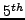

A new algorithm for high-fidelity interface tracking is introduced. It
combines the Lagrangian marker tracking with the Eulerian
level-set based implicit re-distancing, forging advantages of each of
them in a rather simple and very accurate algorithm. The Lagrangian
markers are the carriers of the interface information. In difference to
the front-tracking method, the markers are not explicitly connected,
which is a significant simplification in three dimensions. The interface
topology/connectivity and geometry (normals and curvature) are provided
by the Eulerian field (the signed distance, or the level set function).
During each time step, the markers are moved with the velocity field
(defined by either interface topology, in the curvature-driven
applications; by material velocity, in the fluid-dynamics applications;
or by their combination, in the phase-change fluid dynamics
applications). Then, the signed distance function is re-initialized. We
developed an implicit high-order-accurate HWENO-based
PDE-reinitialization, which is efficient (stable under any CFL number,
with adaptive pseudo-time-step control, permitting fast convergence to
the pseudo-time-steady state), and the -order-accurate in space,
with a very compact stencil. The re-initialization procedure is
formulated as a system of the conservation laws for the normal vector
(hyperbolic components), coupled with the level set equation (containing
elliptic components). The Lagrangian field (markers) is
connected/mapped/anchored to the Eulerian field (signed distance
functions) using the high-order-accurate Least-Squares interpolation
procedure. Importantly, we do not operator-split the Lagrangian step
(marker motion) and the Eulerian steps (fluid dynamics and interface
topology defined by re-distancing), but instead fully-couple them
non-linearly using Newton’s iteration method. For time integration, we
employ implicit Runge-Kutta schemes, which are  -stable. Since
operator-splitting errors are completely avoided, we can demonstrate
high-order-accurate (shown up to the -order) solutions of the
non-linear fully-coupled interface tracking problems. Each linear step of
the Newton iterations is solved with the Jacobian-free version of the
Krylov (GMRES) algorithm. We discuss several GMRES preconditioning
techniques, including the classical ILU-based and the Physics-(PDE)-based
(PB) preconditionings. In the PB preconditioning, we extract an elliptic
component of the re-distancing, forming a Poisson equation, to be
effectively solved with the algebraic multigrid method. The efficacies of
each preconditioning technique are compared in terms of both the ability
to effectively cluster eigenvalues (“Eigenscopy”) of the Jacobian
matrices and the number of Krylov steps needed to converge GMRES. As the
demonstration test-cases, we use solid-body translation/rotation
(“Zalesak disk”, “Crusiform” problems), moderate and severe
interface deformation, tearing and stretching (fluid body in 2D and 3D
single- and multiple vortices) and 2D/3D curvature-driven flows; showing
high-order spatiotemporal convergence for each test-case
-stable. Since
operator-splitting errors are completely avoided, we can demonstrate
high-order-accurate (shown up to the -order) solutions of the
non-linear fully-coupled interface tracking problems. Each linear step of
the Newton iterations is solved with the Jacobian-free version of the
Krylov (GMRES) algorithm. We discuss several GMRES preconditioning
techniques, including the classical ILU-based and the Physics-(PDE)-based
(PB) preconditionings. In the PB preconditioning, we extract an elliptic
component of the re-distancing, forming a Poisson equation, to be
effectively solved with the algebraic multigrid method. The efficacies of
each preconditioning technique are compared in terms of both the ability
to effectively cluster eigenvalues (“Eigenscopy”) of the Jacobian
matrices and the number of Krylov steps needed to converge GMRES. As the
demonstration test-cases, we use solid-body translation/rotation
(“Zalesak disk”, “Crusiform” problems), moderate and severe
interface deformation, tearing and stretching (fluid body in 2D and 3D
single- and multiple vortices) and 2D/3D curvature-driven flows; showing
high-order spatiotemporal convergence for each test-case